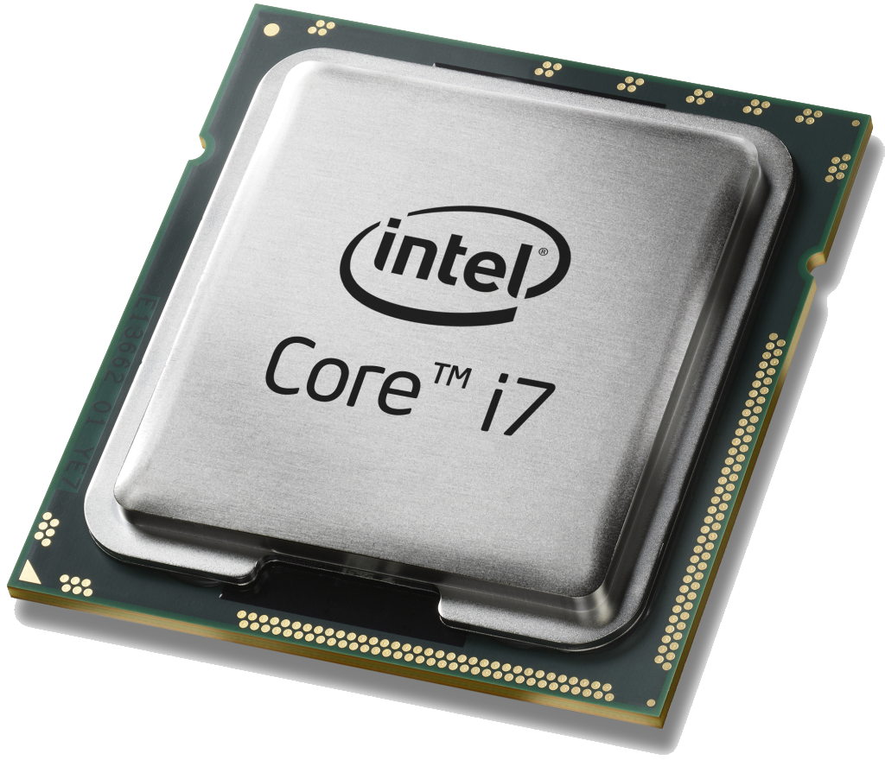

1969. Nippon Calculating Machines Corporation je prišao Intelu da im dizajniraju 12 unikatnih čipova za njhove nove printing kalkulatore, Busicom 141-PF*. Međutim, Intel je napravio 4 čipa od kojih je jedan imao mogućnost programibilnosti za različite namjene. Ti novi čipovi su dobili imena MCS-4” (Intel 2008). MCS-4 su imali novi CPU – 4004.Osim toga također su podržavali samo čitljivu memoriju (engl. Read-Only Memory, ROM), memoriju s izravnim pristupom (engl. Random Access Memory, RAM) te ulazni i izlazni port (Intel 2008).
Godine 1971. Intel kupuje prava od Nippon Calculating Machines Corporation, te lansira 4004 procesor za komercijalnu upotrebu (Brey 2000). Time je 4004 postao prvi programibilni komercijalni procesor. 4004 je imao 2,300 tranzistora, memoriju od 640 byteova I takozvani Bus Speed od 108 KHz (Brey 2000).